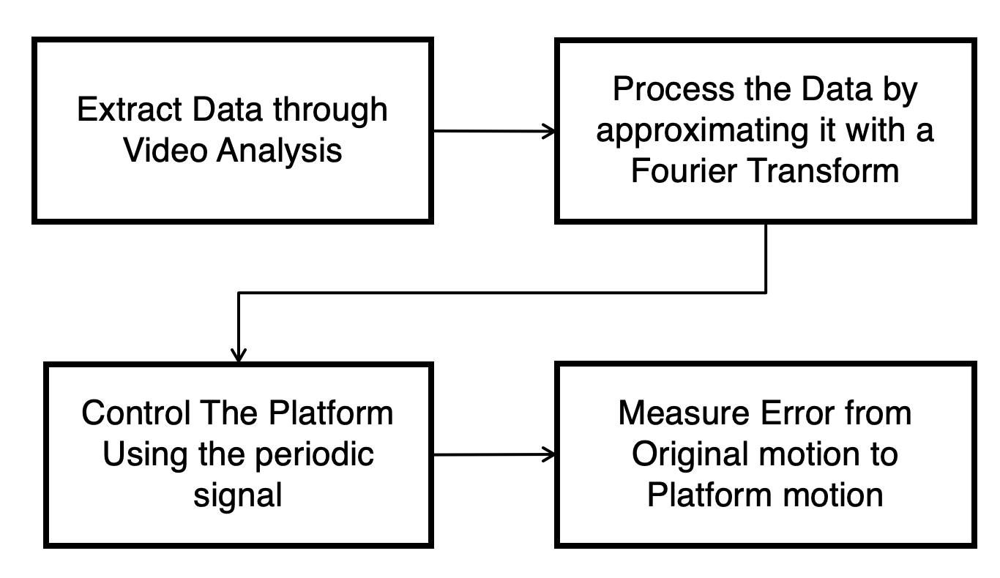

About this portfolio
Who I am and how I work
Who I am
A mechanical engineer from EPFL, specialised in Design & Production with a minor in Management & Technology of Entrepreneurship. My work focuses on robotic and electromechanical systems: machines that move, interact with the physical world, and have to survive it.
How I work
Every project here follows the loop robots demand: model, build, test on real hardware, iterate with data. Design decisions should be settled by measurements, not intuition alone — from a machine deployed in the field in French Polynesia to a Master thesis turning live plant data into a validated design tool.
What I bring
End-to-end ownership, from first specifications and CAD to fabrication and field validation. The ability to bridge mechanics, control and data. And the habit of closing the loop: every measured result here fed a design decision.
Portfolio contents
- ODEWA — an automated extraction machine, blank page to field deployment in 6 months
- Master Thesis, AIRARO — a sizing tool built from live plant data
- Compliant Feet, BioRob Lab — +15% locomotion efficiency on a salamander robot
- 3-DOF Motion Platform, RRL — redesigned to carry a human
- In-Wheel Motor, EPFL Racing Team — a compact integrated actuator
- ZF Group — hardware integration for a battery swap station optimiser
- Gripper — a mechanical grasp mechanism with weight sensing
- Autonomous Hull Cleaner — product development study of a mobile robot

A Functional Extraction Machine in 6 Months
Context & constraints
Pearl farming in French Polynesia generates large volumes of underwater waste with no existing extraction solution. The mission: design, build and validate an automated machine to extract, clean and sort this waste. The constraints were severe — a marine environment, a remote location, local fabrication only, and a hard 6-month deadline covering the full development cycle.
My role
Sole engineer owning the complete cycle: requirements, concept selection, CAD, structural sizing, fabrication, and in-situ testing — in a fast-paced environment with direct exposure to the end users.


Design approach
The architecture was selected against five criteria: robustness in a marine environment, ease of local fabrication, maintainability by non-engineers, compatibility with different boat types, and shipping in a standard container. Structural models and FEA sized the key components before committing to fabrication, keeping the design low cost at every step.

Prototype 1 in action during field tests
From field data to prototype 2
Field data exposed gaps no simulation had predicted, and drove prototype 2 directly: separating extraction from cleaning entirely, with a high-throughput extraction system on a barge and a dedicated, more ergonomic cleaning module on land — targeting a faster, more compact system for future deployments.

A Sizing Tool Built from Live Plant Data
Context & constraints
Sea Water Air Conditioning (SWAC) plants use deep cold seawater for large-scale cooling. Sizing a new plant is a high-stakes decision: the infrastructure is expensive and every design choice locks in decades of operating cost. AIRARO needed a way to design future systems from evidence rather than rules of thumb.
My role & approach
Six months of full-time work as my Master thesis. Starting from operating data of a live SWAC plant, I built thermal and hydraulic models and validated them against the measured behaviour of the real installation. I then turned these models into a generic sizing tool that searches the design space and finds the best configuration for a given site.

Engineering meets economics
The tool does not stop at physics: it optimises while accounting for CAPEX and OPEX, so the output is not just a feasible design but a profitable one. It identified design changes improving COP by 25% and was integrated directly into the company's business plan.
Why it matters for robotics
The exact loop a robotics team runs daily: measure the real system, build models you can trust, and let them drive design decisions under cost constraints.

Compliant Feet for a Salamander Robot
Context & constraints
Most quadruped robots use ball-joint feet and do not take advantage of complex ground contact. The goal: improve the locomotion efficiency of an existing salamander-like robot by introducing passive compliant feet, without modifying the rest of the platform.
Design decisions & why
I designed compliant foot structures exploring the trade-off between stiffness and energy return, prototyped them, and characterised each candidate on a dedicated test bench before committing to integration on the robot. Bench data selected the final design.

Robot locomotion with compliant feet
What I learned
Bench data predicted the trend but not the exact gain — a reminder that final validation always belongs on the real robot. It also confirmed that compliance is a tuning problem: the right stiffness depends on the task, not on a fixed target.

Redesigning a 3-DOF Motion Platform to Carry a Human
Context & constraints
An existing 3-DOF motion platform had to be upgraded to sustain the weight of a human — a hard safety requirement — and then be driven by periodic locomotion extracted in real time from multimodal inputs for motion simulation.
Structural redesign
I reworked the structural design to carry a human safely: load cases, stiffness targets and safety factors defined upfront, then verified through analysis and physical testing before any person stepped on the platform.
Motion extraction & control
On the software side, I implemented real-time extraction of periodic locomotion from a video input and used it to drive the platform, closing the loop from raw signals to physical motion.


Platform driven by extracted periodic locomotion
What I learned
Redesigning the platform's kinematics meant redesigning its control too, so I ended up as deep in the code as in the CAD. Building a periodic motion extractor from video and getting it to drive the new structure required combining mechanical design, kinematics and control in the same loop, not as separate steps.
In-Wheel Motor & Gearbox for a Formula Student Car
Context & constraints
An in-wheel propulsion system is an integrated actuator: motor, gearbox, bearings, cooling and structure packed into a wheel, under hard constraints of unsprung mass, thermal load, packaging and racing regulations, delivered within a cross-functional team.
My role & design decisions
I owned the design of the gearbox and the general integration of the complete wheel assembly. The gearbox had to deliver high torque density in a minimal volume: gear geometry, bearing arrangement and lubrication were traded off against mass and thermal limits. The same problem — compact high-torque-density transmission — is central to actuator design across robotics.
Fabrication & testing
The assembly was fabricated and tested on the car, closing the loop from CAD to track.


What I learned
Designing a subsystem is one thing; integrating it with parts built by other teams — powertrain, cooling, structure — is another: everything has to fit and work together with no single owner of the full picture. It also exposed the real gap between a CAD assembly that mates on screen and the same parts on a workbench, where manufacturing has the final word.

Hardware Integration for a Battery Swap Station Optimiser
The work
The core of the project was a Python model of a battery swap station, running an optimisation algorithm over energy flows and battery capacities for a fleet of electric commercial vehicles (eTrucks, eBuses, eTrailers). To make the concept tangible, I built a reduced-scale physical model of the station that demonstrated the optimiser's decisions in hardware: energy flows and battery states visualised live as the algorithm ran. My role was the integration layer, translating the Python model's decisions into hardware behaviour through Arduino and electronics.

A Simple, Effective Gripper for a Robotic Arm
Context & constraints
Not every good design needs to be complex. The goal was a gripper for a robotic arm that grasps objects safely without crushing them, using a simple mechanical solution rather than active control.
Design decisions & why
The gripper closes until a foam pad on each finger presses a button, so grip force is set by the mechanical design itself rather than by a control loop. No active force control, just a mechanical limit and a sensor telling it when to stop closing. Finger thickness and length were tuned to get the right bend under load, balancing compliance against grip strength. A separate force load sensor weighed the object while it was held. Simple, but it worked reliably.

What I learned
Tuning finger thickness and length was mostly trial and error: each geometry change altered the bend under load, so the right stiffness came from testing physical iterations rather than picking values on paper. It also confirmed that a well-placed sensor can replace a control loop entirely — the foam and button did in hardware what a force sensor and control logic would have done in software, at a fraction of the complexity.
Autonomous Hull Cleaning Robot
Context & constraints
A concept study for a mobile robot: an autonomous system to clean boat hulls. The project covered the full product development process, from user needs and requirements to candidate architectures, selection and detailed design.
Architecture decisions
The critical decisions centred on actuator selection and on making structural, hydraulic and electrical subsystems coexist — including both low-voltage and high-voltage electronics on the same platform. This was a prefeasibility study, not a build, but enough to expose how many disciplines a single robotic product has to reconcile before anything gets built.

What this project shows
The discipline of early-stage product development: needs, requirements, trade-offs, justified selection — applied to a system where mechanical, hydraulic and electrical constraints all pull in different directions at once.
Skills & Contact
What I work with
Robotics
Kinematics and structural redesign of robotic platforms, closed-loop control, real-time motion extraction from video, compliant mechanism design, sensor integration and instrumentation (motion capture, multimodal inputs), embedded electronics and low-level hardware control (Arduino).
CAD & Design
SolidWorks, CATIA V5/V6, 3DEXPERIENCE, Fusion 360. Design for manufacturing and assembly (DFM/DFA).
Simulation & Analysis
Abaqus (static FEA), MATLAB, Python, C.
Prototyping & Testing
Hands-on fabrication, test-bench design, instrumentation and data acquisition, root-cause analysis, design iteration from measured results.
Project Management
Site Manager & Programmer of Festival Balélec (2023–2025), the largest open-air student festival in Europe: supplier coordination, logistics and decision-making under pressure.